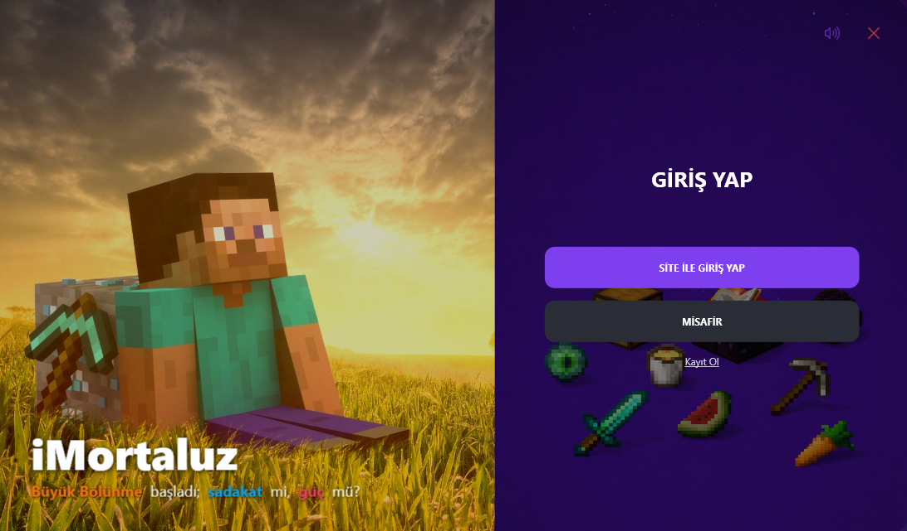

Mini Oyun Modülü
Sunucuya bağlanmayı beklerken launcher içinde küçük oyunlar oynayarak vakit geçir.
FPS artışı, özel mod paketleri, otomatik güncellemeler ve topluluğa özel etkinliklerle iMortaluz deneyimini bir üst seviyeye taşı.
Desteklenen platformlar: Windows 10/11 • 64-bit • .NET 6.0

Sunucuya bağlanmayı beklerken launcher içinde küçük oyunlar oynayarak vakit geçir.
Tüm turnuvalar ve ödüller launcher’daki takvimde listelenir.
Launcher içindeki etkileşimlerinden puan kazan, profilini öne çıkar.
Sunucudaki rütbene göre arayüz renk paleti otomatik değişir, profilin canlı kalır.
Kimlerin çevrimiçi olduğunu gör, arkadaş ekle ve toplulukla sohbeti sürdür.
Kayıt olmadan launcher’ı keşfet veya internet yokken kaydettiğin dünyaları aç.
Launcher her açılışta sürümü kontrol eder, yeni setup’ı indirip aynı klasöre otomatik kurar.
Gelişmiş kimlik doğrulama protokolü hesaplarını korur, bilgiler güvende kalır.
VIP kampanyaları, sürüm notları ve blog haberleri tek akışta launcher’a düşer.
Modern WPF tasarımı düşük kaynak tüketir ve akıcı bir deneyim sunar.
Hemen indir ve tüm avantajları hesabına yükle!
Evet. Launcher güvenlik odaklı geliştirildi; zararlı yazılım veya istenmeyen bileşen içermez. Yayınlanan dosyalar doğrulama kontrolleriyle dağıtılır.
İşletim sistemin için uygun yükleyiciyi indir, kurulum sihirbazındaki adımları izle. Kurulumdan sonra launcher üzerinden oyunu başlatabilirsin.
Hayır. iMortaluz Launcher ücretsiz olarak indirilebilir ve kullanılabilir. Herkesin sorunsuz bir oyun deneyimine ulaşabilmesini hedefliyoruz.
Launcher açılışta güncellemeyi kontrol eder. Yeni sürüm varsa indirir ve kurulum sürecini otomatik şekilde tamamlar.
Geliştirme hızına göre değişir; genelde düzenli aralıklarla yeni sürümler yayınlıyoruz. Büyük iyileştirmelerde daha sık güncelleme görebilirsin.
Elbette. Discord topluluğumuz üzerinden her zaman bize ulaşabilirsin; sorun giderme ve öneriler için aktif destek sağlıyoruz.